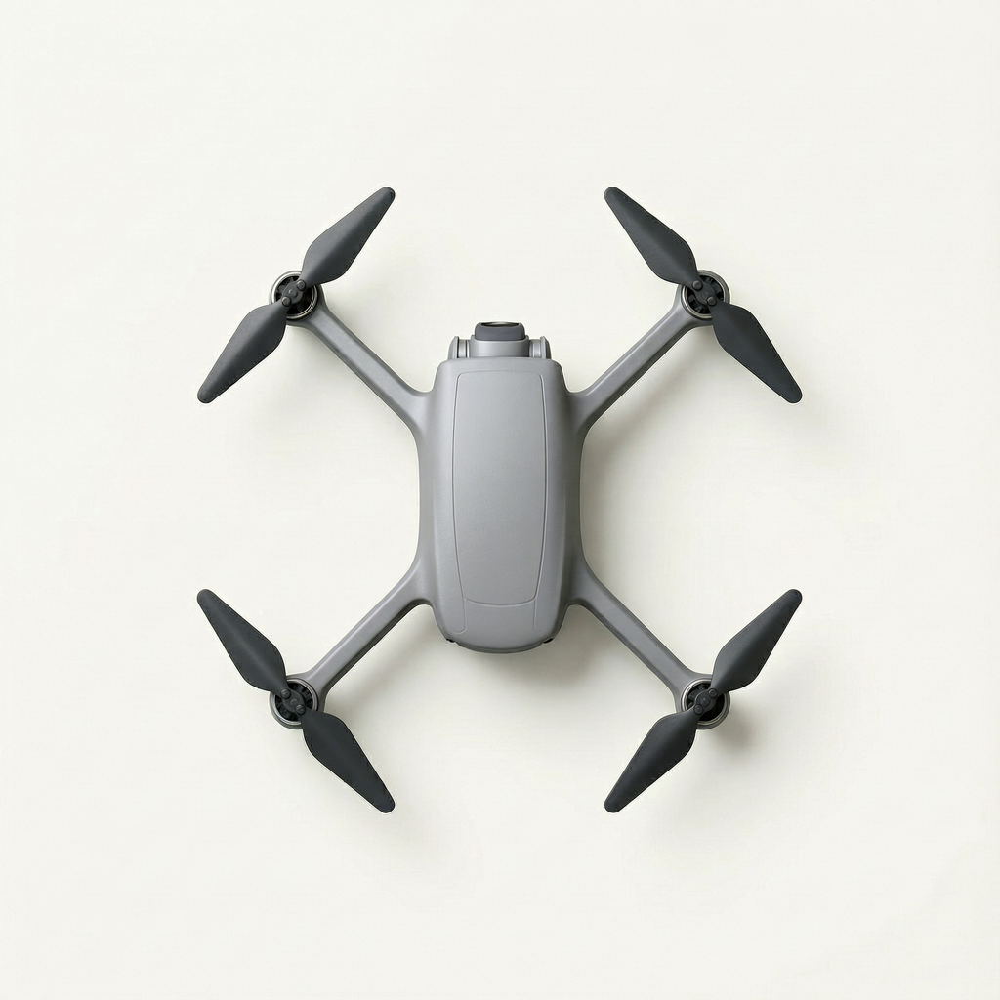
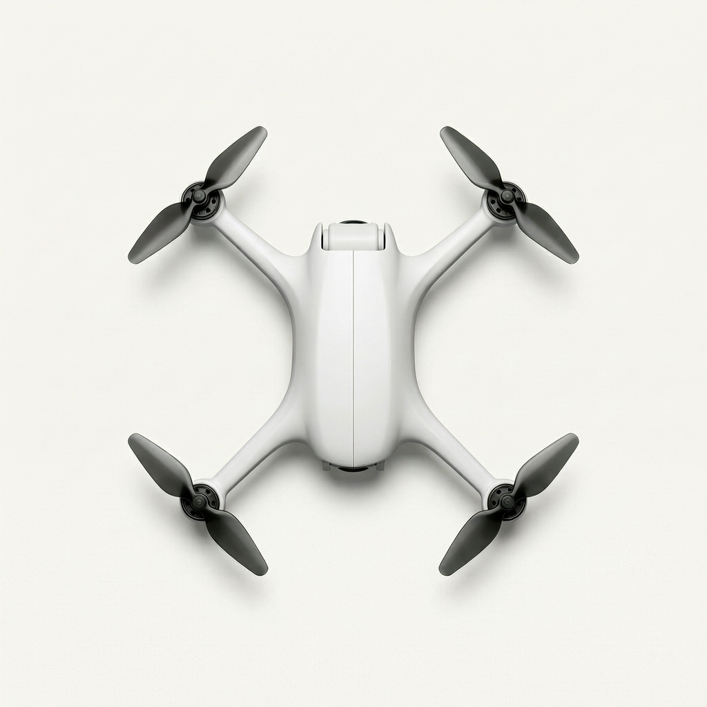
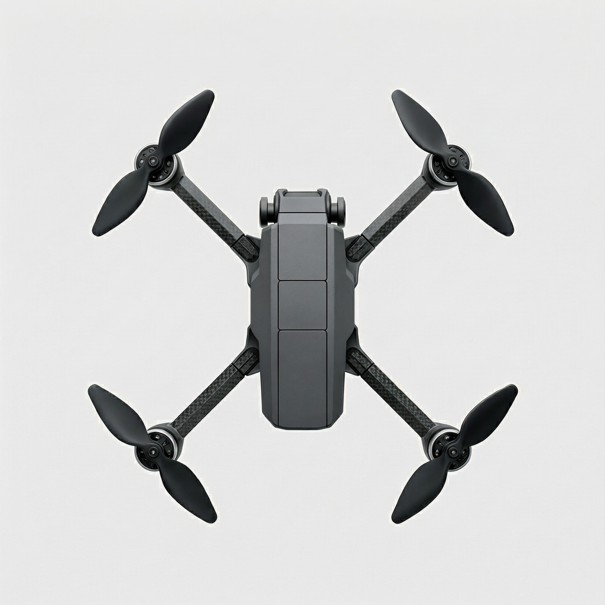

A 紧凑舱式
展开后整机仍显紧凑，四臂从圆舱短肩接出。

- 生成时选了什么
- 流线舱 · 壳长宽比 1.4 · 臂宽 20 mm · 短肩包覆 · 内嵌鼻舱 · 单盖缝
- 图上实现了什么
- 中灰机壳与四臂连得上，中央上盖边界清楚，机鼻两侧有支座。
- 最明显的问题
- 鼻端模组露出较多，像叠在壳前；从这张图很难读出预设的内嵌。
A、B、C 是同一航拍任务的三组平行造型规格，每组各一张开发样图。点开原图，分别看每个方向的意图有没有画出来。
展开后整机仍显紧凑，四臂从圆舱短肩接出。

拉长机身，让壳面渐渐收成细臂，保留连续曲面。

让机身、接合座和前伸相机能各自读出来。

原 H3 开发批，每种组合一张。True X，电机横纵跨度比 1∶1，对角轴距 250 mm，四臂展开，每轴两叶、桨径 5 英寸，无护圈。同一张轴心与机臂方向点线图。正交顶视，机头向上，相机水平朝前，允许看不见镜面。三张都可数出四副双叶。
设置来自已导出的预设。壳体长宽比和臂宽是请求值。具体曲面、配色、材质、分缝路径和脚撑外形未在实发词中指定。文字观察是知条件 AI 初读；被遮住的下支架和内部光轴均待判。